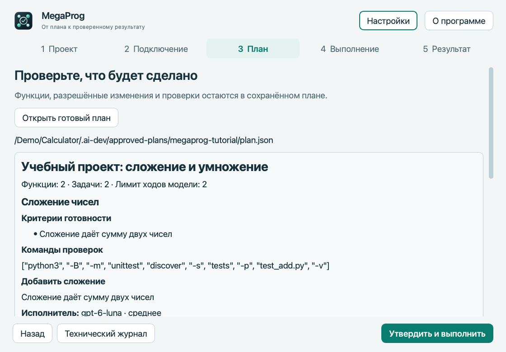

macOS · Apple Silicon
MegaProg
Запускает согласованные задачи разработки через Codex и сохраняет требования, проверки и прогресс проекта.
Предварительная версия · 4.5.1Перед запускомОтдельно установите Codex CLI и войдите через аккаунт ChatGPT с доступом к Codex; нужен Git-проект. Приложение не нотарифицировано Apple.


Как это работает
- Составить план
- Передать задачу Codex CLI
- Проверить результат
Первые шаги
Распакуйте MegaProg.app, проверьте подключение и откройте учебный пример. Просмотрите план и команды перед разрешением запуска.